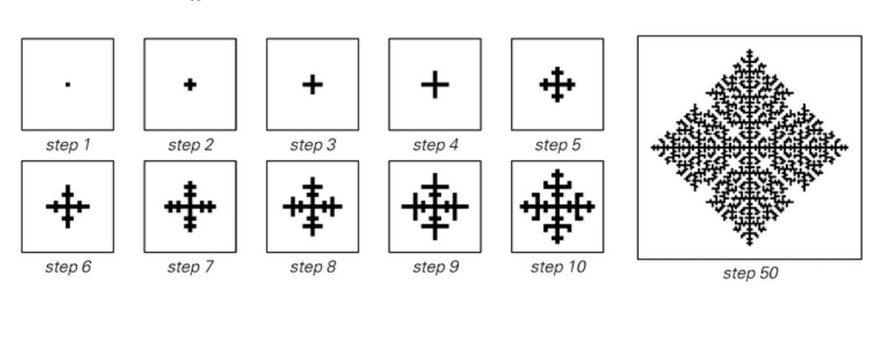
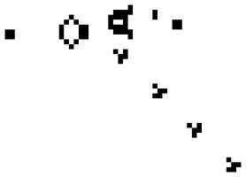

Overview
A cellular automaton is simply a single two-state 'cell' (0 or 1) which evolves according to one or more rules; these rules define how a cell changes based on the state of its neighbors.
Collections of these automaton's (automata) can be used to simulate any system whose elements change based on the state of their neighbors.
Cellular automata can produce extremely complex systems, such as circuits and touring machines.
Cellular Automaton - Wikipidia
Examples

